#01 – Rohbox
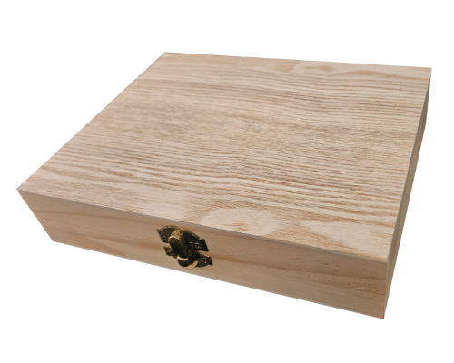

PORTAL #01
Zwischen Hoffnung und Vergänglichkeit öffnet sich ein Tor in zwei gegensätzliche Welten. Jeder Schritt erinnert daran, dass jede Entscheidung unseren Weg verändert.
Unikat kaufenNahaufnahmen zeigen die feinen Pinselstriche, Texturen und Details des fertigen Unikats.
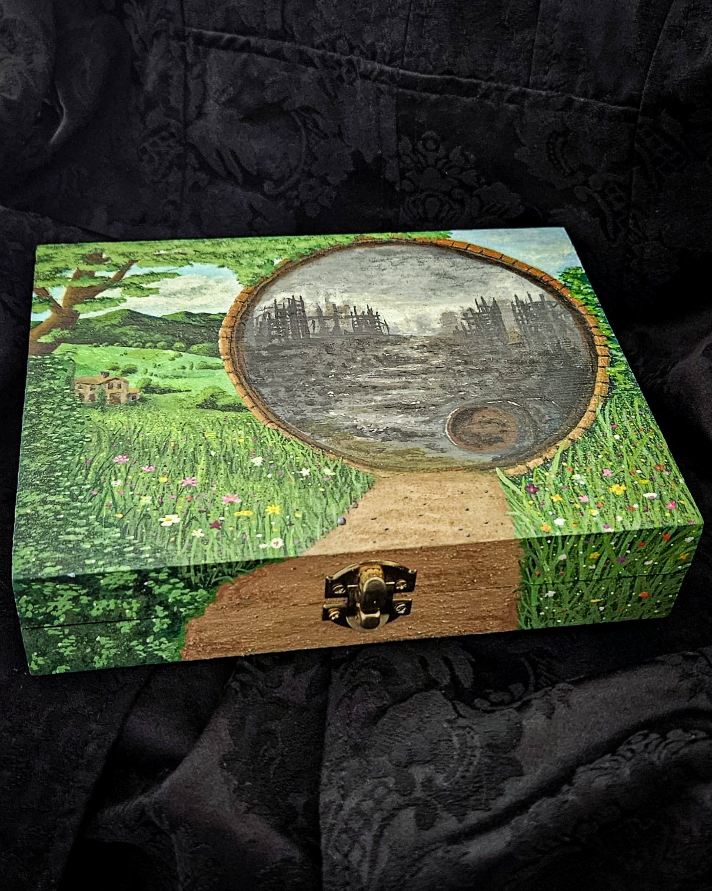
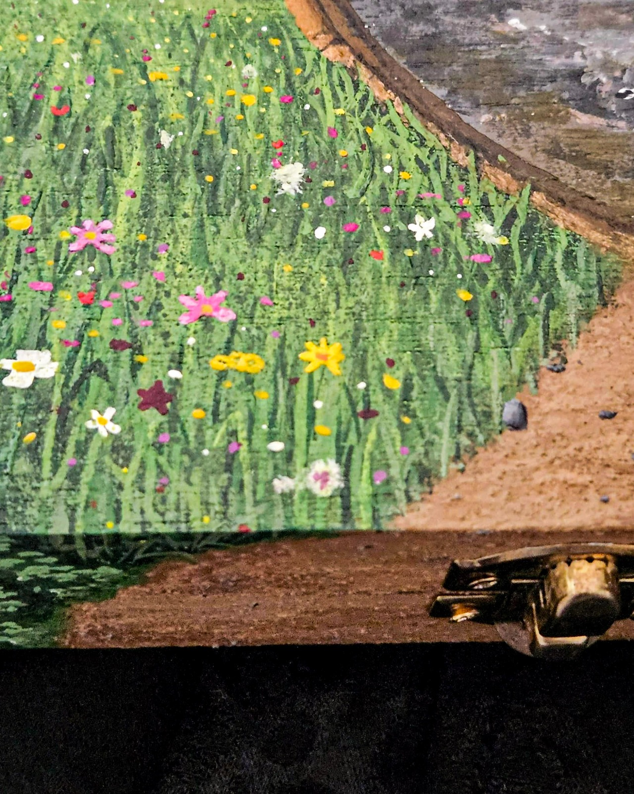
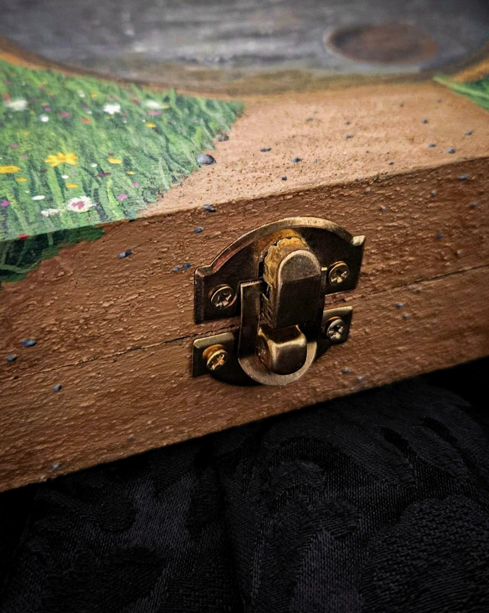
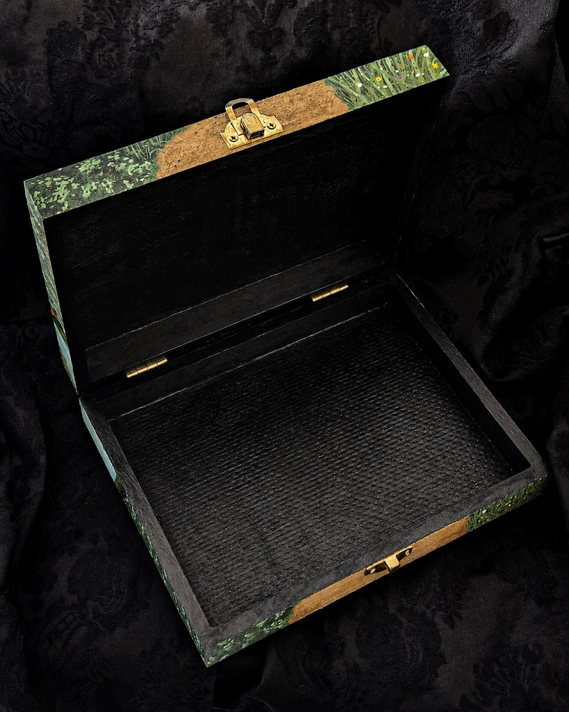
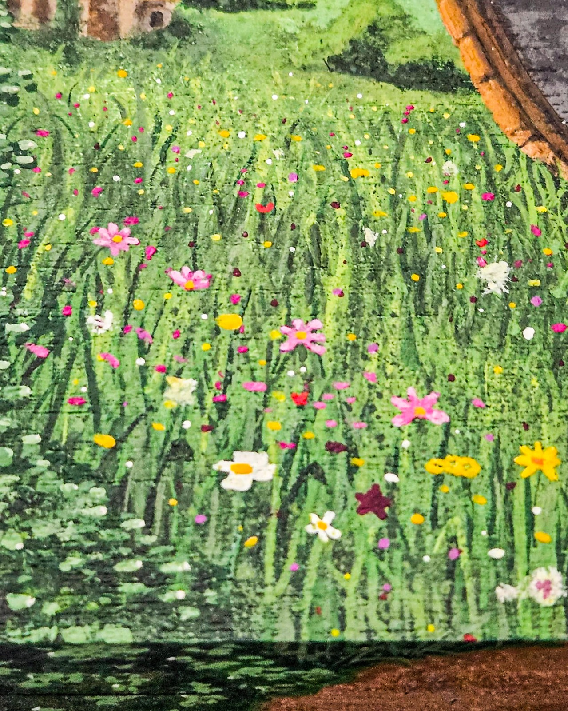
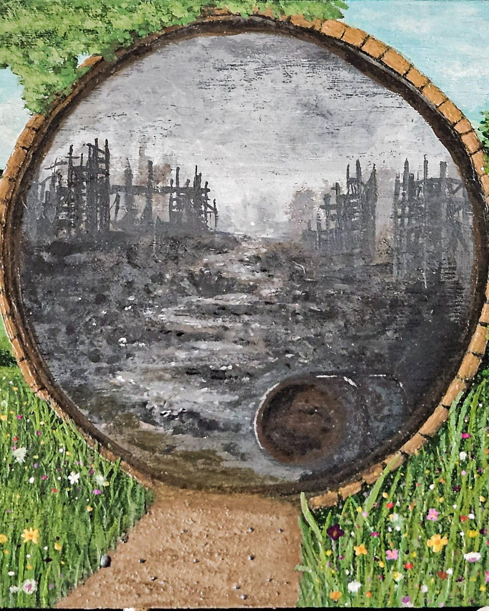
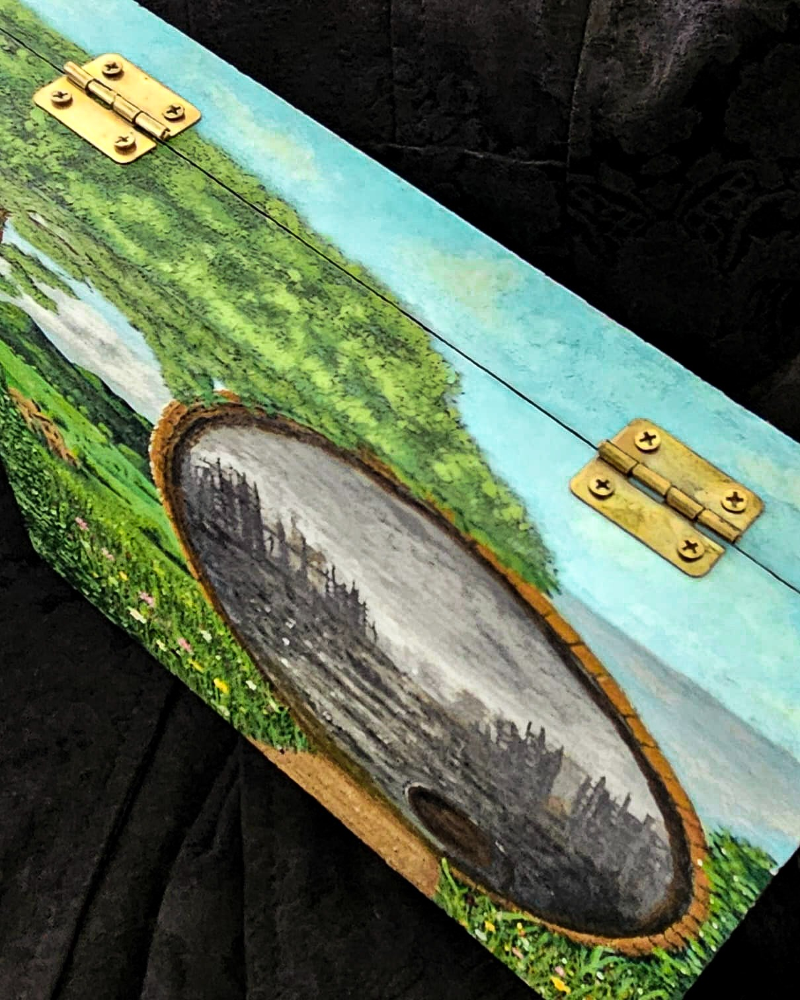
Vom unbehandelten Holz bis zum fertigen Portal. Jeder Schritt wurde von Hand gemalt und dokumentiert.
#01 – Rohbox

#02 – Skizze
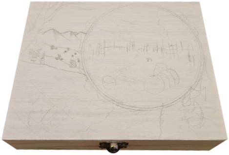
#03 – Erste Farben
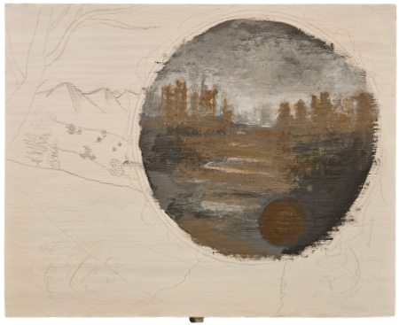
#04 – Portal
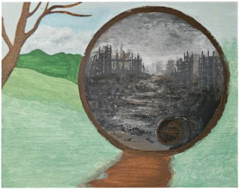
#05 – Landschaft
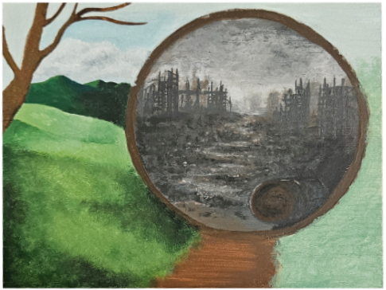
#06 – Vegetation
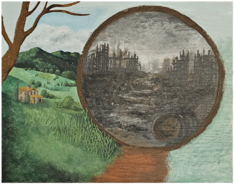
#07 – Feine Details
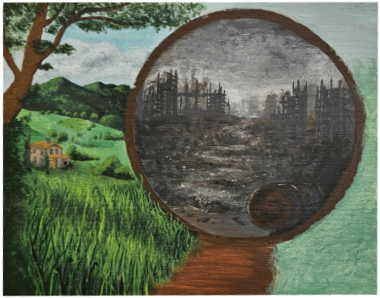
#08 – Licht & Schatten
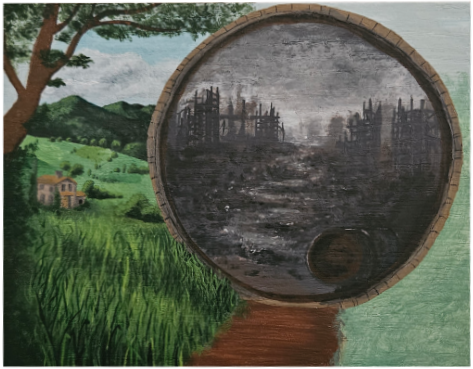
#09 – Goldverzierungen
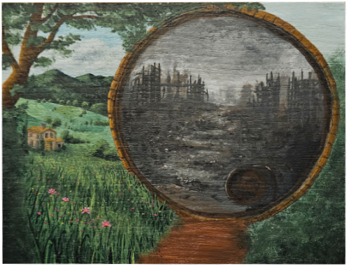